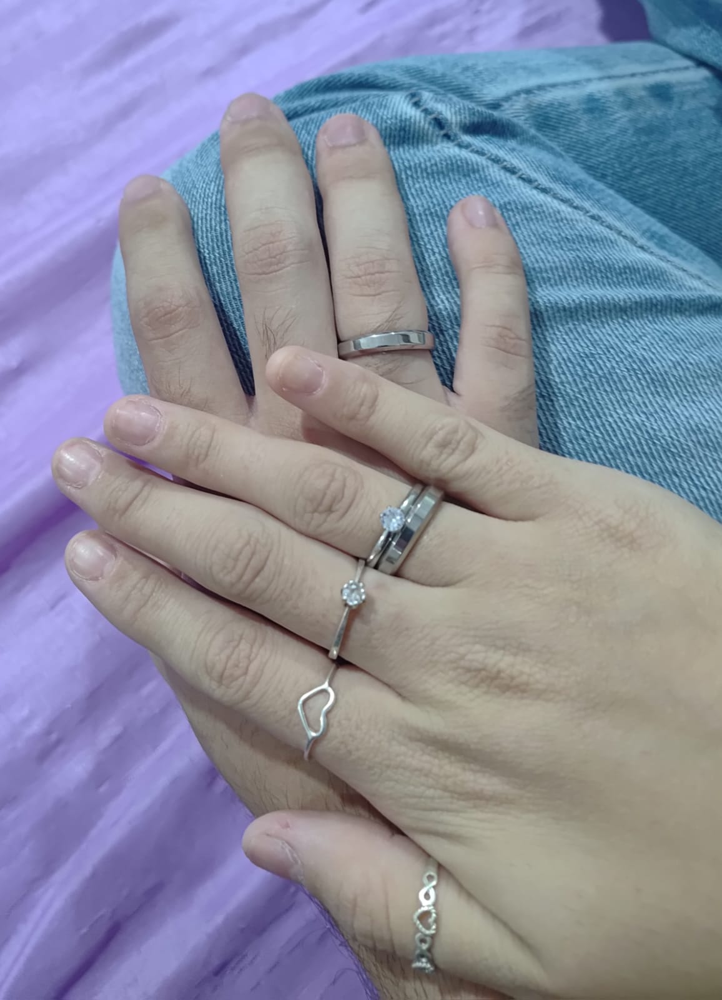

A construção do nosso namoro mais doce, leve e profundamente íntimo.
Hoje celebramos 3 meses do "sim" que transformou a minha realidade. E comemorar com Algodão Doce faz todo o sentido para quem conhece o tamanho do seu amor por esse doce. Mas a verdade é que nenhuma doçura do mundo chega perto do teu sorriso, do mistério fascinante do teu olhar ou do aconchego que é passar o dia inteirinho grudado em você.
Nossa intimidade floresceu. O toque sutil da sua pele, os seus cabelos deslizando entre os meus dedos, e aqueles beijos longos e a cabeça perfeitamente encaixada no meu ombro... Cada pedaço desse nosso clima gostoso me faz ter certeza de onde eu quero ficar.

Trinta e dois momentos da nossa coleção de sorrisos
Três meses são apenas as primeiras páginas de um livro magnífico que temos para escrever. Lembrar de cada sexta, sábado e domingo colados me dá a clareza absoluta do amanhã.
Você é o meu par perfeito. Feliz nosso dia, meu amor. ❤️